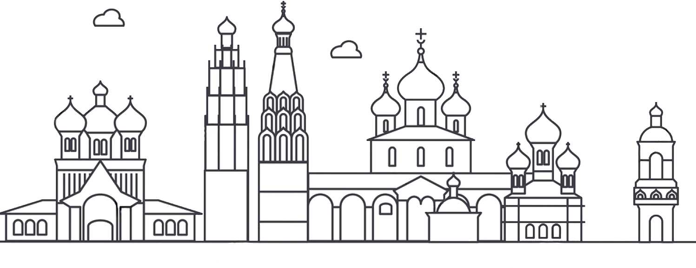

Информация о проекте
Добро пожаловать на сайт «Литературный Ярославль»!
Мы предлагаем вам стать участником интерактивной экскурсии по литературным местам города. Вы сможете погрузиться в атмосферу XIX века или открыть для себя имена деятелей прошлого столетия и нашего времени.
Поехали!